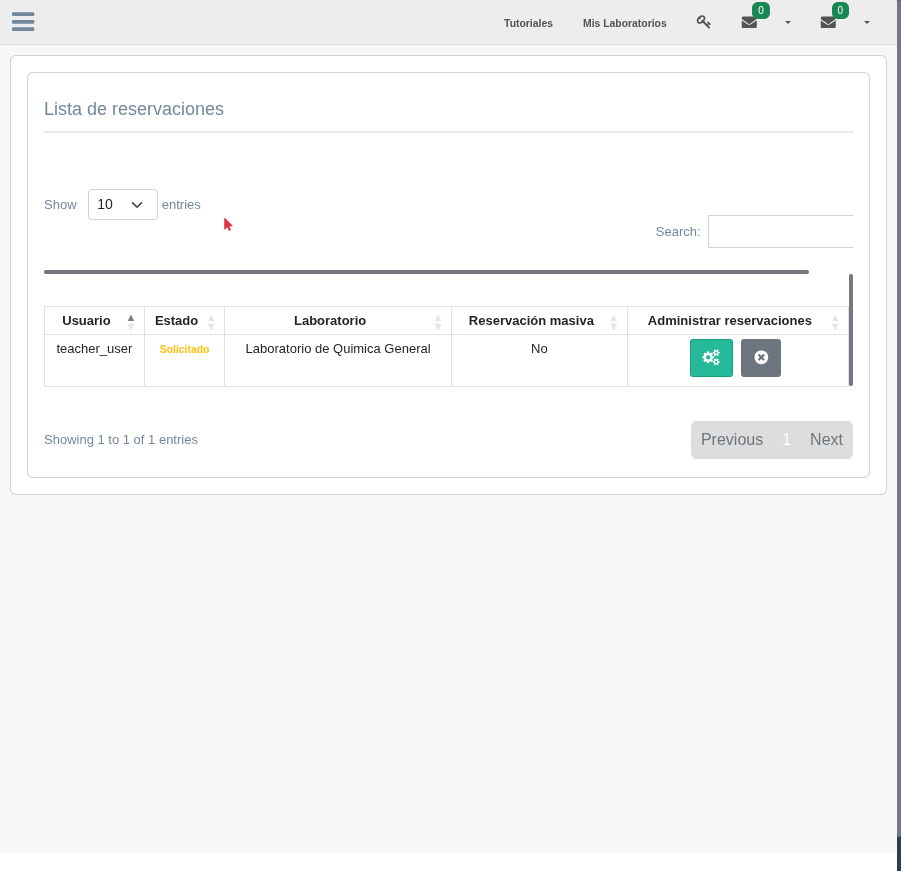
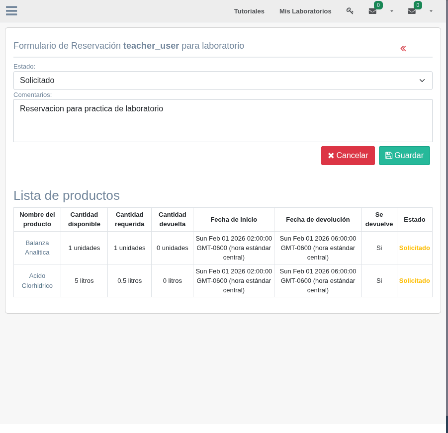

3. Gestionar Reservaciones
Los encargados del laboratorio son responsables de revisar, aprobar o rechazar las solicitudes de reservación. En esta sección aprenderá cómo gestionar las reservaciones entrantes y cómo el sistema automatiza el control del inventario.
Vista de Reservaciones por Estado
El panel de gestión de reservaciones permite filtrar las solicitudes según su estado actual. Esto facilita identificar rápidamente las reservaciones pendientes de revisión:
- Solicitadas: reservaciones nuevas que esperan revisión. Son la prioridad del encargado.
- Aceptadas: reservaciones aprobadas con productos pendientes de préstamo o ya prestados.
- Rechazadas: reservaciones que fueron denegadas por el encargado.
- Cerradas: reservaciones completadas donde todos los productos fueron devueltos o finalizados.

Panel de reservaciones con filtros por estado mostrando solicitudes pendientes
Aprobar una Solicitud
Cuando el encargado recibe una solicitud de reservación, debe revisar los detalles de cada producto solicitado y decidir si la aprueba. El proceso es el siguiente:
- Revisar los detalles: verifique los productos solicitados, las cantidades, las fechas de préstamo y los comentarios del solicitante.
- Verificar la disponibilidad: el sistema muestra la cantidad disponible en el inventario para cada producto. Confirme que hay suficiente cantidad para cubrir la solicitud.
- Aprobar la reservación: al aceptar la solicitud, el estado de la reservación cambia a "Aceptada" y los productos pasan al estado "Prestado". El sistema programa automáticamente la tarea de decremento de inventario.

Detalle de una solicitud de reservación con opciones de aprobar o rechazar
Rechazar una Solicitud
Si una solicitud no puede ser aprobada, el encargado puede rechazarla. Los motivos comunes de rechazo incluyen:
- Cantidad insuficiente en el inventario para cubrir la solicitud
- Conflictos de fechas con otras reservaciones ya aprobadas
- Productos restringidos que requieren autorización especial
- Solicitud incompleta o con información incorrecta
Al rechazar, el estado de la reservación cambia a "Rechazada" y los productos individuales cambian al estado "Rechazado". El solicitante será notificado del rechazo.
Validación Automática de Disponibilidad
El sistema realiza validaciones automáticas para garantizar la coherencia del inventario:
Además de la regla temporal, el sistema verifica:
- Que la cantidad solicitada no supere la cantidad disponible en el estante
- Que no existan superposiciones de fechas con otras reservaciones para el mismo producto
- Que el producto siga existiendo en el inventario al momento de la aprobación
Transiciones de Estado
La siguiente tabla resume las transiciones válidas para reservaciones y productos:
| Elemento | Estado Inicial | Acción | Estado Final |
|---|---|---|---|
| Reservación | Solicitada | Encargado aprueba | Aceptada |
| Reservación | Solicitada | Encargado rechaza | Rechazada |
| Reservación | Aceptada | Todos los productos devueltos | Cerrada |
| Producto | Seleccionado | Se envía la solicitud | Solicitado |
| Producto | Solicitado | Reservación aceptada | Prestado |
| Producto | Solicitado | Producto rechazado | Rechazado |
| Producto | Prestado | Usuario devuelve | Devuelto |
Gestión Automatizada del Inventario
Cuando una reservación es aceptada, el sistema programa tareas automáticas utilizando Celery para gestionar el inventario sin intervención manual. El modelo ReservationTasks registra cada tarea programada asociada a un producto reservado.
El flujo automatizado funciona de la siguiente manera:
Línea de tiempo mostrando cómo la aprobación de una reservación desencadena una tarea programada que actualiza el inventario automáticamente.